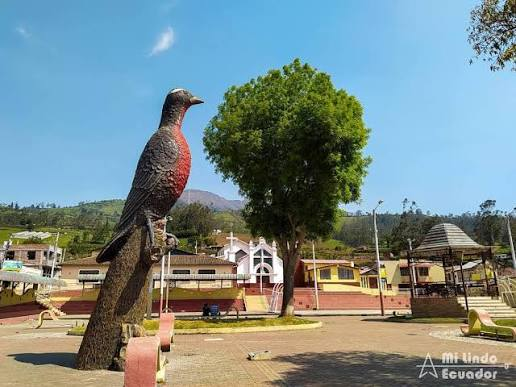

01

Historia
Contexto histórico
La cultura Puruhá se desarrolló en el territorio que actualmente corresponde principalmente a la provincia de Chimborazo. Sus comunidades mantuvieron formas propias de organización, producción agrícola, expresión simbólica y relación con el entorno andino.